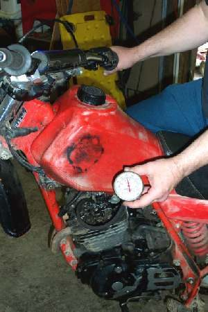

The bike is strong for the first part of a ride, then gets weaker as the engine heats up, especially on long climbs, in slow traffic or in hot weather. After a rest it is strong again. Either the engine is overheating (and protecting itself or close to damage), or a part works when cool and fails when hot: an ignition coil, a clutch that slips when its oil is hot, or a brake that drags once it warms.
Is it safe to ride?
With care. If the engine also knocks, smells hot, smokes, or the temperature warning comes on, stop and let it cool: it may be close to seizing.
Quick checks first
- Is the engine oil level correct, and the oil not old and thin?
- Air-cooled: are the cylinder fins clean, not packed with mud or oil?
- Liquid-cooled: is the coolant level right and does the fan run?
- After a ride, is one wheel hub or brake disc much hotter than the other (test carefully with the back of a finger near, not on, the part)?
- Does the engine pink (rattle) when hot?
Diagnose it step by step
1Is the oil level correct and the engine cooling working?
- Low oil: Check the engine oil level. Oil also cools an air-cooled engine.
- Fins blocked or oily: Check air cooling.
- Liquid-cooled with low coolant or no fan: Check and top up coolant and see Liquid-cooled engine overheats.
- All fine: go to step 2.
2After a ride, is a brake disc, drum or hub much hotter than the other wheel, and does that wheel spin less freely?
- Yes: a brake is dragging as it heats. Check for brake drag and see Brake caliper sticks.
- No: go to step 3.
3When hot, do the revs rise without the bike speeding up?
- Yes: the clutch slips when hot. Adjust clutch free play and see Clutch slips.
- No: go to step 4.
4When hot, does it misfire or jerk, rather than just feel weak?
- Yes: a coil or pick-up failing with heat. Test the ignition coil and see Ignition cuts out when hot.
- No: go to step 5.
5Read the plug after a hot run. White or blistered? Does it pink?
- Yes: lean and running hot. Find an intake air leak and see Engine runs hot and lean. The K-Light 125 overheating chart also lists poor fuel grade and long high-speed or overloaded riding.
- No: go to step 6.
6. Carburettor: is a fuel hose near the hot engine or exhaust? Fuel can boil in the line. Reroute it and check the float level. Fuel-injected: read fault codes; some ECUs cut power when the engine is too hot.
Use a road test on the same route to confirm.
Causes, most likely first
| Cause | How to confirm | Fix |
|---|---|---|
| Low or old oil | Dipstick or sight glass | Oil level check |
| Blocked fins or cooling fault | Visual, coolant level, fan | Air cooling check |
| Brake dragging when hot | Hot disc or hub, wheel slow | Brake drag check |
| Clutch slipping when hot | Revs rise without speed | Clutch free play |
| Lean mixture | White plug, pinking | Intake leak test |
| Coil failing hot | Misfire only when hot | Coil test |